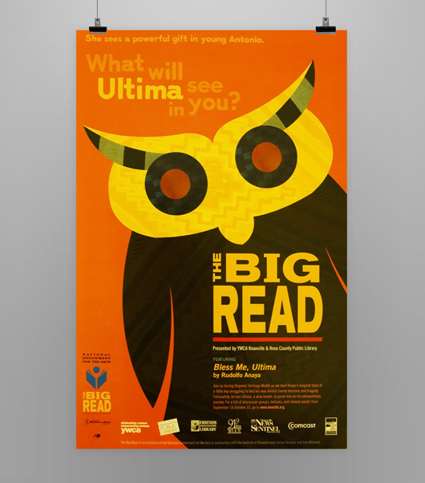

<div class="content-wrapper clearfix">

    <article class="content">

        <div class="row">
            <div class="col span_6">
                
            </div>

        </div>

        <div class="row">
            <div class="col span_6 center">
                <h1>The Big Read</h1>
                <div class="tagline">Sponsored by the National Endowment for the Arts, The Big Read creates meaningful conversations in communities across America through classic pieces of literature.</div>
            </div>
        </div>


        <div class="row">
            <div class="col span_3">
                
            </div>
        </div>

        <div class="row">
            <div class="col span_3">
                
            </div>
        </div>


        <div class="row">
            <div class="col span_4">
                <h2>Project Details</h2>
                <p>Bless Me, Ultima is a coming-of-age story about a teenage boy, Antonio, and his spiritual guide, Ultima. Ultima's owl is a key character in the book, and served as inspiration for our campaign.</p>
                <p>In my design, the shape of the owl was pulled from illustrations on old Mexican pottery. To create an immediate sense of place, I used Southwestern textiles to fill in the owl.</p>
                <p>In addition to traditional newspaper ads and posters, we created stencils and applied spray chalk ads for the campaign across the city to pique interest and gain momentum.</p>
            </div>
            <div class="col span_2 right">
                <h2>My Role</h2>
                <ul>
                    <li>Campaign Concept</li>
                    <li>Art Direction</li>
                    <li>Illustration</li>
                </ul>
            </div>
        </div>    

    </article>
</div>
